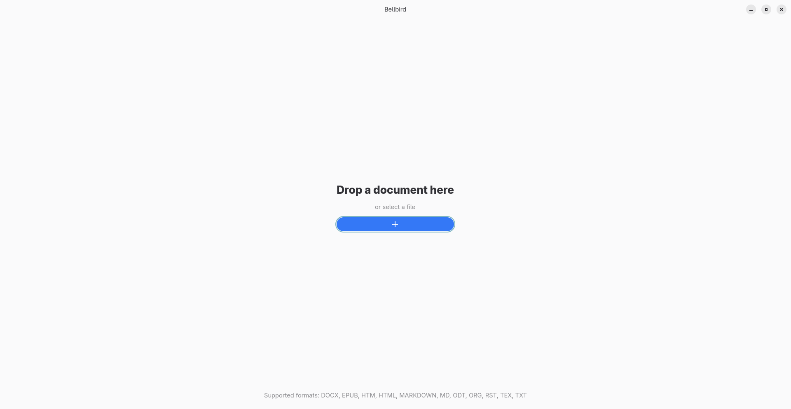
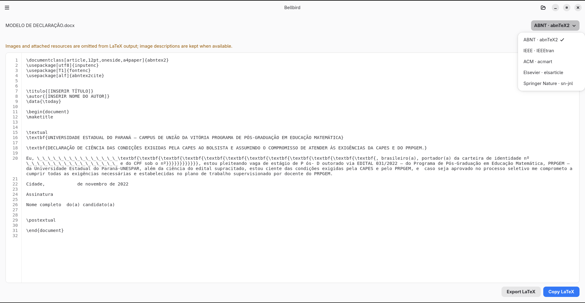
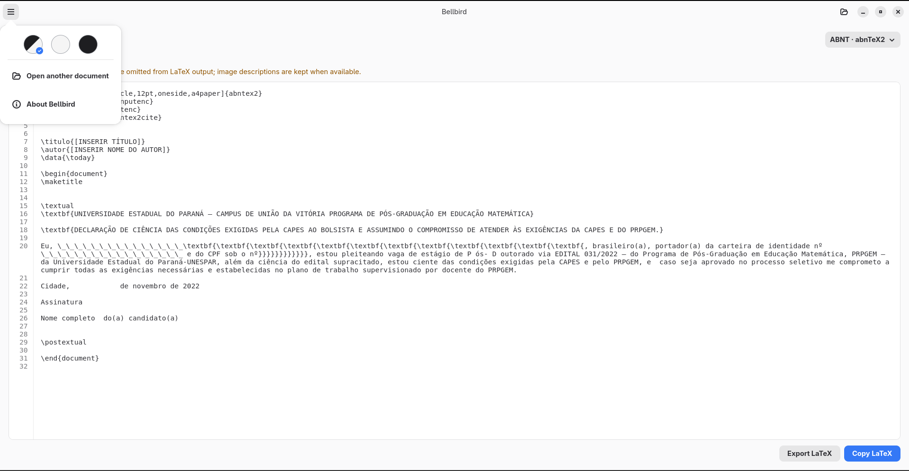

01 · Overview
About Bellbird
Bellbird is a GNOME app that converts documents into well-organized LaTeX code. Processing happens on your computer, so you do not need an account or an internet connection to convert files.
The result is a LaTeX file that you can review, copy, or export to continue working with the tools you prefer.

02 · Formats and templates
Choose a document and an output style
Input formats
Bellbird opens these formats:
- Word: .docx
- EPUB: .epub
- HTML: .htm and .html
- Markdown: .markdown and .md
- OpenDocument: .odt
- Org: .org
- reStructuredText: .rst
- LaTeX: .tex
- Plain text: .txt
Output templates
Choose a LaTeX style that fits your document:
- Standard LaTeX
- ABNT (abnTeX2)
- IEEE (IEEEtran)
- ACM (acmart)
- Elsevier (elsarticle)
- Springer Nature (sn-jnl)

03 · Conversion
Convert a document to LaTeX
- Drop a file into the Bellbird window or choose Select a file.
- Once the document is open, choose a template from LaTeX style.
- Wait for processing to finish. The generated code appears in LaTeX output.
To change the template, choose another option under LaTeX style. Bellbird updates the output using the document that is already open.
Files can be up to 10 MiB. To avoid errors, also make sure the file is stored locally on your computer.

04 · Output
Review, copy, or export the result
- Read the code in LaTeX output. Line numbers make it easier to find specific sections.
- Choose Copy LaTeX to copy the content to your clipboard.
- Choose Export LaTeX to save a .tex file. The file picker suggests the Downloads folder and a name based on the document; you can choose a different location or name.
Review any warnings and the generated code before using it. Some content may be converted to plain text to keep the LaTeX valid, and documents with structural or citation issues may need adjustments.
Bellbird uses the author information found in the document. If no author is present, the output marks a place for you to fill in.

05 · Privacy and limitations
How your documents are processed
Conversion happens locally. Bellbird does not upload documents to a cloud service and does not require an account or an internet connection to process them.
What the output includes
- Bellbird generates a single .tex file; it does not create a PDF.
- Images and attached resources are not included in the output. When available, image descriptions are kept as text.
- Bellbird does not compile LaTeX. To create a PDF, open the exported file in a LaTeX distribution and install the class and packages required by the selected template.
06 · Installation
Requirements and installation
Bellbird {{ site.application.version }} is available for Linux x86_64 as a Flatpak. Download Bellbird {{ site.application.version }}.
If Flatpak is not set up on your computer yet, see the instructions for preparing your system.
Return to the site's download section for the format, platform, and license.
07 · Troubleshooting
Common issues
The file format is not supported
Check the list of input formats in this manual and select a file with a supported extension.
The file cannot be opened
Make sure the file is stored locally, the app can access it, and its size does not exceed 10 MiB.
The result needs adjustments
Review the messages and generated code. Unsupported content may become plain text, and citations or LaTeX structures may need manual corrections.
I need a PDF
Bellbird generates LaTeX code but does not compile it. Use a LaTeX distribution with the classes and packages required by the selected template.
If the issue persists, note the steps that caused it and the message shown, then report the issue.
08 · Identification
Software and manual information
Documented software
- Name
- Bellbird
- Developer
- Diego Pereira do Nascimento
- Documented version
- {{ site.application.version }}
- Platform
- Linux · GNOME
- Package format
- Flatpak · Linux x86_64
- License
- GNU GPL version 3 or later (GPL-3.0-or-later)
- Technologies
- Rust · GTK 4 · Libadwaita

Manual authorship and edition
- Author
- Diego Pereira do Nascimento
- Edition
- 1st edition · English
- Updated
Project links
To save this manual as a PDF, use your browser's print option and choose “Save as PDF”.